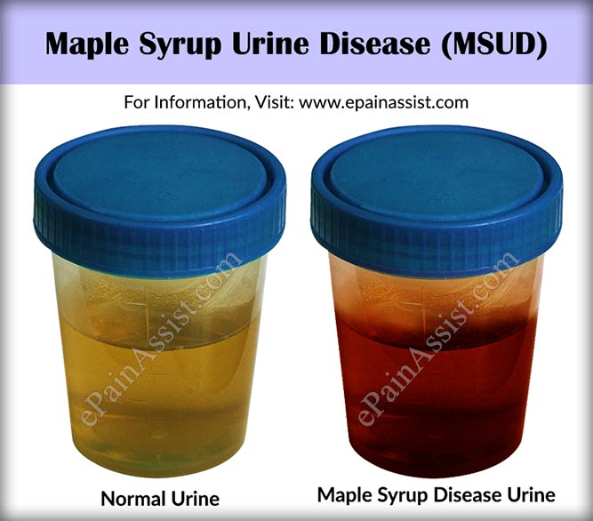

By: Finian Wright ㉖ Written 100% in HTML!
Maple syrup urine disease (also called BCKD deficiency, branched-chain alpha-keto acid dehydrogenase deficiency, branched-chain ketoaciduria, ketoacidemia, or MSUD) is a autosomal recessive genetic caused by mutations in the BCKDHA, BCKDHB, or DBT genes disease that causes the body to be unable to produce certain amino acids correctly. It gets it's name because one of the first symptoms is urine with an odor similar to that of maple syrup. If untreated it can cause comas, seizures, feeding difficulties, mental issues, lethargy and even death in people with the disease.